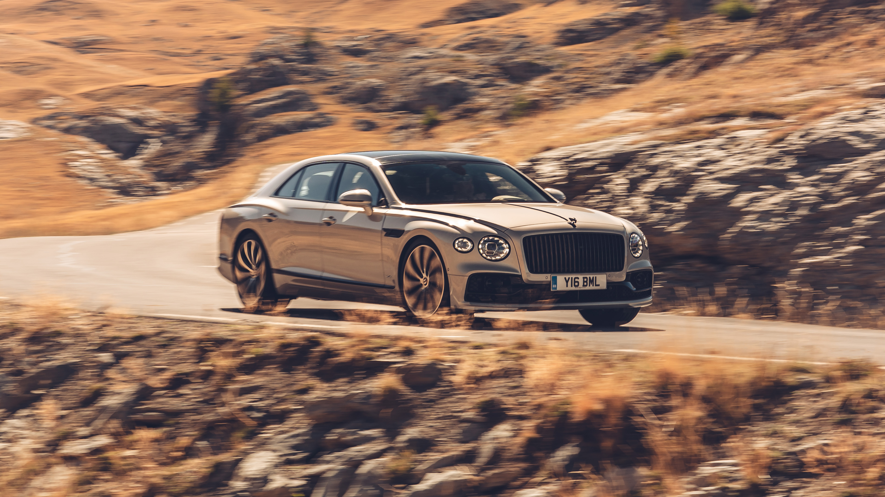
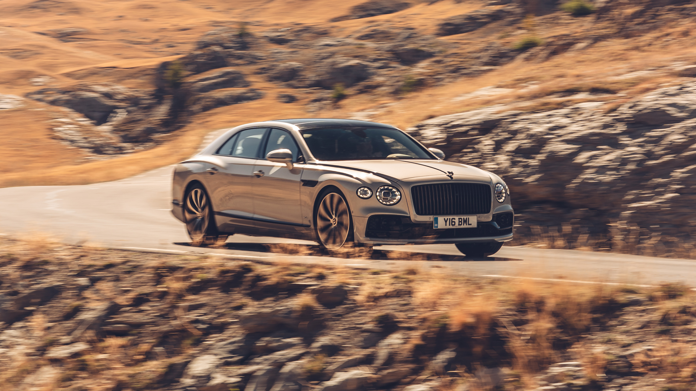

Bentley Motors Limited is a British designer, manufacturer and marketer of luxury cars and SUVs. Headquartered in Crewe, England, the company was founded by W. O. Bentley (18881971) in 1919 in Cricklewood, North London, and became widely known for winning the 24 Hours of Le Mans in 1924, 1927, 1928, 1929 and 1930. The Bentley enterprise was always underfunded, but inspired by the 1924 Le Mans win by John Duff and Frank Clement, Barnato agreed to finance Bentley's business. Barnato had incorporated Baromans Ltd in 1922, which existed as his finance and investment vehicle. Bentley Motors Limited is a British designer, manufacturer and marketer of luxury cars and SUVs. Headquartered in Crewe, England, the company was founded by W. O. Bentley (18881971) in 1919 in Cricklewood, North London, and became widely known for winning the 24 Hours of Le Mans in 1924, 1927, 1928, 1929 and 1930. The Bentley enterprise was always underfunded, but inspired by the 1924 Le Mans win by John Duff and Frank Clement, Barnato agreed to finance Bentley's business. Barnato had incorporated Baromans Ltd in 1922, which existed as his finance and investment vehicle. Prominent models extend from the historic sports-racing Bentley 4½ Litre and Bentley Speed Six; the more recent Bentley R Type Continental, Bentley Turbo R, and Bentley Arnage; to its current model line, including the Flying Spur, Continental GT, Bentayga and the Mulsanne—which are marketed worldwide, with China as its largest market as of November 2012.[16] Today most Bentley models are assembled at the company's Crewe factory, with a small number assembled at Volkswagen's Dresden factory, Germany,[17] and with bodies for the Continental manufactured in Zwickau and for the Bentayga manufactured at the Volkswagen Bratislava Plant. The joining and eventual separation of Bentley and Rolls-Royce followed a series of mergers and acquisitions, beginning with the 1931 purchase by Rolls-Royce of Bentley, then in receivership. In 1971, Rolls-Royce itself was forced into receivership and the UK government nationalised the company—splitting it into an aerospace company (Rolls-Royce Plc) and an automotive company (Rolls-Royce Motors Limited, including Bentley). Rolls-Royce Motors was subsequently sold to engineering conglomerate Vickers, and in 1998 Vickers sold Rolls-Royce to Volkswagen AG, including Bentley with its name and logos (but not the name "Rolls Royce"). The Bentley enterprise was always underfunded, but inspired by the 1924 Le Mans win by John Duff and Frank Clement, Barnato agreed to finance Bentley's business. Barnato had incorporated Baromans Ltd in 1922, which existed as his finance and investment vehicle. Bentley Motors Limited is a British designer, manufacturer and marketer of luxury cars and SUVs. Headquartered in Crewe, England, the company was founded by W. O. Bentley (18881971) in 1919 in Cricklewood, North London, and became widely known for winning the 24 Hours of Le Mans in 1924, 1927, 1928, 1929 and 1930. The Bentley enterprise was always underfunded, but inspired by the 1924 Le Mans win by John Duff and Frank Clement, Barnato agreed to finance Bentley's business. Barnato had incorporated Baromans Ltd in 1922, which existed as his finance and investment vehicle. Prominent models extend from the historic sports-racing Bentley 4½ Litre and Bentley Speed Six; the more recent Bentley R Type Continental, Bentley Turbo R, and Bentley Arnage; to its current model line, including the Flying Spur, Continental GT, Bentayga and the Mulsanne—which are marketed worldwide, with China as its largest market as of November 2012.[16] Today most Bentley models are assembled at the company's Crewe factory, with a small number assembled at Volkswagen's Dresden factory, Germany,[17] and with bodies for the Continental manufactured in Zwickau and for the Bentayga manufactured at the Volkswagen Bratislava Plant. The joining and eventual separation of Bentley and Rolls-Royce followed a series of mergers and acquisitions, beginning with the 1931 purchase by Rolls-Royce of Bentley, then in receivership. In 1971, Rolls-Royce itself was forced into receivership and the UK government nationalised the company—splitting it into an aerospace company (Rolls-Royce Plc) and an automotive company (Rolls-Royce Motors Limited, including Bentley). Rolls-Royce Motors was subsequently sold to engineering conglomerate Vickers, and in 1998 Vickers sold Rolls-Royce to Volkswagen AG, including Bentley with its name and logos (but not the name "Rolls Royce"). Prominent models extend from the historic sports-racing Bentley 4½ Litre and Bentley Speed Six; the more recent Bentley R Type Continental, Bentley Turbo R, and Bentley Arnage; to its current model line, including the Flying Spur, Continental GT, Bentayga and the Mulsanne—which are marketed worldwide, with China as its largest market as of November 2012.[16] Today most Bentley models are assembled at the company's Crewe factory, with a small number assembled at Volkswagen's Dresden factory, Germany,[17] and with bodies for the Continental manufactured in Zwickau and for the Bentayga manufactured at the Volkswagen Bratislava Plant. The joining and eventual separation of Bentley and Rolls-Royce followed a series of mergers and acquisitions, beginning with the 1931 purchase by Rolls-Royce of Bentley, then in receivership. In 1971, Rolls-Royce itself was forced into receivership and the UK government nationalised the company—splitting it into an aerospace company (Rolls-Royce Plc) and an automotive company (Rolls-Royce Motors Limited, including Bentley). Rolls-Royce Motors was subsequently sold to engineering conglomerate Vickers, and in 1998 Vickers sold Rolls-Royce to Volkswagen AG, including Bentley with its name and logos (but not the name "Rolls Royce"). The Bentley enterprise was always underfunded, but inspired by the 1924 Le Mans win by John Duff and Frank Clement, Barnato agreed to finance Bentley's business. Barnato had incorporated Baromans Ltd in 1922, which existed as his finance and investment vehicle. Bentley Motors Limited is a British designer, manufacturer and marketer of luxury cars and SUVs. Headquartered in Crewe, England, the company was founded by W. O. Bentley (18881971) in 1919 in Cricklewood, North London, and became widely known for winning the 24 Hours of Le Mans in 1924, 1927, 1928, 1929 and 1930. The Bentley enterprise was always underfunded, but inspired by the 1924 Le Mans win by John Duff and Frank Clement, Barnato agreed to finance Bentley's business. Barnato had incorporated Baromans Ltd in 1922, which existed as his finance and investment vehicle. Prominent models extend from the historic sports-racing Bentley 4½ Litre and Bentley Speed Six; the more recent Bentley R Type Continental, Bentley Turbo R, and Bentley Arnage; to its current model line, including the Flying Spur, Continental GT, Bentayga and the Mulsanne—which are marketed worldwide, with China as its largest market as of November 2012.[16] Today most Bentley models are assembled at the company's Crewe factory, with a small number assembled at Volkswagen's Dresden factory, Germany,[17] and with bodies for the Continental manufactured in Zwickau and for the Bentayga manufactured at the Volkswagen Bratislava Plant. The joining and eventual separation of Bentley and Rolls-Royce followed a series of mergers and acquisitions, beginning with the 1931 purchase by Rolls-Royce of Bentley, then in receivership. In 1971, Rolls-Royce itself was forced into receivership and the UK government nationalised the company—splitting it into an aerospace company (Rolls-Royce Plc) and an automotive company (Rolls-Royce Motors Limited, including Bentley). Rolls-Royce Motors was subsequently sold to engineering conglomerate Vickers, and in 1998 Vickers sold Rolls-Royce to Volkswagen AG, including Bentley with its name and logos (but not the name "Rolls Royce").